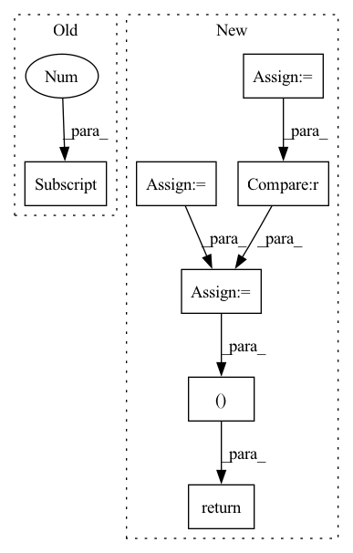

Pattern ID :34328
Before Change
edge_weights = torch.ones(edge_index.size(1), dtype=torch.int,
device=edge_index.device)
else:
edge_weights = np.ones(edge_index.shape[1] , dtype=np.int)
degree = weighted_degree(index, edge_weights, num_nodes=num_nodes)
return edge_index, edge_weights / degree[index]
After Change
if backend is torch_sparse:
assert edge_weights is None
deg = edge_index.sum(dim=dim).to(torch.float)
deg_inv = deg.pow(-1.0)
deg_inv[deg_inv == float("inf") ] = 0
edge_index = deg_inv.view(-1, 1) * edge_index
return edge_index, None
index = edge_index[dim]
degree = weighted_degree(index, edge_weights, num_nodes=num_nodes)
return edge_index, edge_weights / degree[index]In pattern: SUPERPATTERN
Frequency: 3
Non-data size: 7
Instances Fragment ID: 98422877
Project Name: torchspatiotemporal/tsl
Commit Name: 50089afdf23de12eb6d11e9d5e7e64d949d45611
Time: 2022-08-18
Author: ivan.marisca@hotmail.it
File Name: tsl/ops/connectivity.py
M Class Name: AnonimousClass
N Class Name: AnonimousClass
M Method Name: normalize(4)
N Method Name: normalize(4)
M Parent Class:
N Parent Class:
M File Name: tsl/ops/connectivity.py
N File Name: tsl/ops/connectivity.py
M Start Line: 181
M End Line: 187
N Start Line: 215
N End Line: 225
Before Change
* bool: whether to return as array of idxs or boolean values
Outputs: (N_mask, CA_mask)
lengths = torch.arange(scn_seq.shape[-1] *l_aa)
// repeat if needed:
if len(lengths.shape) == 2:
lengths = repeat(lengths, "l -> b l", b=scn_seq.shape[0])After Change
wrapper = torch.zeros(*scn_seq.shape, 14)
// N is the first atom in every AA. CA is the 2nd.
wrapper[:, 0] = 1
wrapper[:, 1] = 2
wrapper[:, 2] = 3
wrapper = rearrange(wrapper, "... l c -> ... (l c)")
// find idxs
N_mask = wrapper == 1
CA_mask = wrapper == 2
C_mask = wrapper == 3
if boolean:
return N_mask, CA_mask, C_mask
return N_mask.nonzero(), CA_mask.nonzero(), C_mask.nonzero()
def nerf_torch(a, b, c, l, theta, chi):
Custom Natural extension of Reference Frame. Fragment ID: 98422878
Project Name: lucidrains/alphafold2
Commit Name: 1e5f99521575995589d1fbe94d2bd693f7e274c9
Time: 2021-03-03
Author: ericalcaide1@gmail.com
File Name: alphafold2_pytorch/utils.py
M Class Name: AnonimousClass
N Class Name: AnonimousClass
M Method Name: scn_backbone_mask(3)
N Method Name: scn_backbone_mask(3)
M Parent Class:
N Parent Class:
M File Name: alphafold2_pytorch/utils.py
N File Name: alphafold2_pytorch/utils.py
M Start Line: 189
M End Line: 198
N Start Line: 189
N End Line: 201
Before Change
edge_weights = torch.ones(edge_index.size(1), dtype=torch.int,
device=edge_index.device)
else:
edge_weights = np.ones(edge_index.shape[1] , dtype=np.int)
degree = weighted_degree(index, edge_weights, num_nodes=num_nodes)
return edge_index, edge_weights / degree[index]
After Change
if backend is torch_sparse:
assert edge_weights is None
deg = edge_index.sum(dim=dim).to(torch.float)
deg_inv = deg.pow(-1.0)
deg_inv[deg_inv == float("inf") ] = 0
edge_index = deg_inv.view(-1, 1) * edge_index
return edge_index, None
index = edge_index[dim]
degree = weighted_degree(index, edge_weights, num_nodes=num_nodes)
return edge_index, edge_weights / degree[index] Fragment ID: 98422868
Project Name: torchspatiotemporal/tsl
Commit Name: f28e5a2fddc34eeb90a13c113512c8ab12b6138b
Time: 2022-07-20
Author: ivan.marisca@hotmail.it
File Name: tsl/ops/connectivity.py
M Class Name: AnonimousClass
N Class Name: AnonimousClass
M Method Name: normalize(4)
N Method Name: normalize(4)
M Parent Class:
N Parent Class:
M File Name: tsl/ops/connectivity.py
N File Name: tsl/ops/connectivity.py
M Start Line: 181
M End Line: 187
N Start Line: 215
N End Line: 225